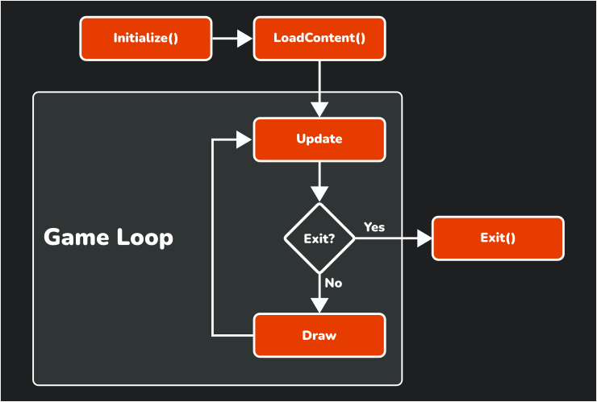
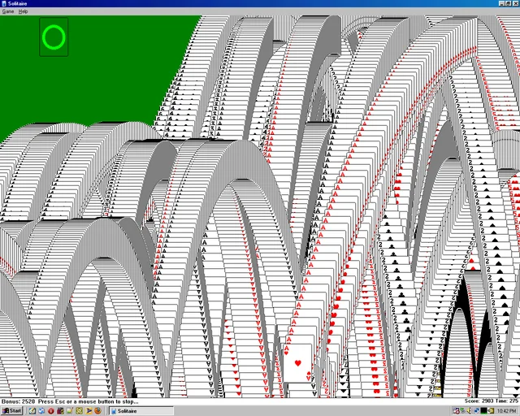
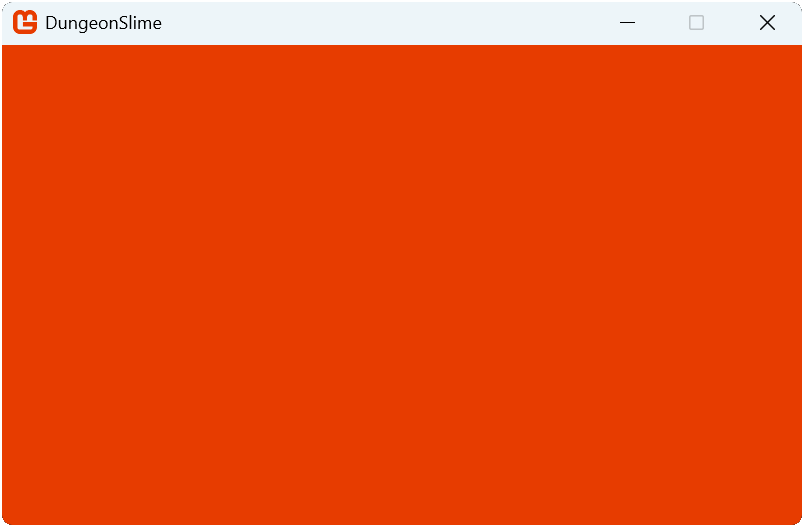

Chapter 03: The Game1 File
Explore the contents of the Game1 file generated when creating a new MonoGame project.
After you created a new MonoGame project using the MonoGame Cross-Platform Desktop Application template in Chapter 02, you will notice the generated files and project structure that serve as a starting point for your game application. While MonoGame offers different templates based on target platform, all projects will contain the Game1.cs file.
Exploring the Game1 Class
At the core of a MonoGame project is the Game class. This class handles the initialization of graphics services, initialization of the game, loading content, updating, and rendering the game. When you create a new MonoGame project, this Game class is implemented as the Game1 class that you can customize as needed for your specific game.
Tip
While the default template names the class Game1, you are free to rename it to something more appropriate for your project. However, for consistency, the documentation will continue to refer to it as Game1.
Locate the Game1.cs file that was generated when you created the MonoGame project and open it. The default content will be:
using Microsoft.Xna.Framework;
using Microsoft.Xna.Framework.Graphics;
using Microsoft.Xna.Framework.Input;
namespace DungeonSlime;
public class Game1 : Game
{
private GraphicsDeviceManager _graphics;
private SpriteBatch _spriteBatch;
public Game1()
{
_graphics = new GraphicsDeviceManager(this);
Content.RootDirectory = "Content";
IsMouseVisible = true;
}
protected override void Initialize()
{
base.Initialize();
}
protected override void LoadContent()
{
_spriteBatch = new SpriteBatch(GraphicsDevice);
}
protected override void Update(GameTime gameTime)
{
if (GamePad.GetState(PlayerIndex.One).Buttons.Back == ButtonState.Pressed || Keyboard.GetState().IsKeyDown(Keys.Escape))
Exit();
base.Update(gameTime);
}
protected override void Draw(GameTime gameTime)
{
GraphicsDevice.Clear(Color.CornflowerBlue);
base.Draw(gameTime);
}
}
This class provides the following structure:
- Graphics and Rendering: The class declares two core graphics components; the GraphicsDeviceManager for interacting with the Graphics Processing Unit (GPU) and the SpriteBatch for 2D rendering.
- Initialization: The constructor and Initialize method handle the game's setup sequence.
- Content Loading: The LoadContent method manages game asset loading during startup.
- Game Loop: The game loop consists of the Update method for game logic and the Draw method for rendering, running continuously until the game is told to exit.
Figure 3-1 below shows the lifecycle of a MonoGame game including the Update and Draw methods that make up the game loop.
|  |
|---|
| Figure 3-1: Lifecycle of a MonoGame game |
Graphics and Rendering
The graphics pipeline in monogame starts with two components: the GraphicsDeviceManager and SpriteBatch.
private GraphicsDeviceManager _graphics;
private SpriteBatch _spriteBatch;
The GraphicsDeviceManager initializes and the connection to the graphics hardware. It handles tasks such as setting the screen resolution, toggling between fullscreen and windowed mode, and managing the GraphicsDevice, which is the interface between your game and the Graphics Processing Unit (GPU) the game is running on. The SpriteBatch optimizes 2D rendering by batching similar draw calls together, improving draw performance when rendering multiple sprites.
Initialization
MonoGame's initialization process for your game follows a specific sequence. The constructor runs first, which handles basic setup like creating the GraphicsDeviceManager, setting the content directory, and the visibility of the mouse.
public Game1()
{
_graphics = new GraphicsDeviceManager(this);
Content.RootDirectory = "Content";
IsMouseVisible = true;
}
After that, the Initialize method executes, providing a dedicated place for additional configuration and initializations.
protected override void Initialize()
{
base.Initialize();
}
This separation allows you to perform setup tasks in a logical order; core systems in the constructor and game-specific initializations in the Initialize method. The call to base.Initialize() should never be removed, as this is where the graphics device is initialized for the target platform.
Tip
You may be wondering why there is an Initialize method instead of performing all initializations in the constructor. The Initialize method is a virtual method that is overridden, and it is advised to not call overridable methods from within a constructor, as this can lead to unexpected states in object constructor when called. Additionally, when the constructor is called, the base constructor will instantiate properties and services based on the target platform that may be needed first before performing initializations for the game itself.
Content Loading
The LoadContent method serves as the place for asset management. Here you can load textures, sound effects, music, and other game assets. We will cover loading assets in the coming chapters as we discuss each asset type that can be loaded. In a new project, the only task it performs is initializing a new instance of the SpriteBatch.
protected override void LoadContent()
{
_spriteBatch = new SpriteBatch(GraphicsDevice);
}
This method is only call once during the startup of the game, but when it is called can be a little confusing at first. In the Initialize method shown above, when the base.Initialize call is executed, the final task it performs is calling the LoadContent method. This means any initializations you need to perform that have a dependency on assets being loaded should be done after the base.Initialize call and not before it.
The Game Loop
MonoGame implements a game loop by calling Update and Draw over and over until the game is told to exit. Recall at the end of Chapter 02 when you ran the project for the first time, I mentioned that there is a lot going on behind the scenes? This game loop is what I was referring to.
MonoGame is executing the Update method and then the Draw method 60 times per second.
protected override void Update(GameTime gameTime)
{
if (GamePad.GetState(PlayerIndex.One).Buttons.Back == ButtonState.Pressed || Keyboard.GetState().IsKeyDown(Keys.Escape))
Exit();
base.Update(gameTime);
}
protected override void Draw(GameTime gameTime)
{
GraphicsDevice.Clear(Color.CornflowerBlue);
base.Draw(gameTime);
}
The Update method at the moment is not doing much, only checking for input from a controller or keyboard to determine if the game should exit. However, the Draw method is doing more than what it appears to at first glance.
The first line is executing the Clear method of the GraphicsDevice property using the color CornflowerBlue. Recall that the GraphicsDevice object is your direct interface between the game and what is rendered to the screen. Every time the Draw method is called, this line of code of erasing the contents of the game window and refilling it with the color specified. Without clearing the contents of the screen first, every draw call would draw the new frame render over top of the previous render, and you'd end up with something like the old solitaire win screen
|  |
|---|
| Figure 3-2: Windows XP Solitaire Win Screen |
While this can make for a neat effect, it is not something you want all the time. So, the screen is cleared and refilled with a solid color.
Note
You can test this yourself by modifying the code to use a different color, such as Color.MonoGameOrange. (yes, there is a MonoGame Orange color).
protected override void Draw(GameTime gameTime)
{
GraphicsDevice.Clear(Color.MonoGameOrange);
base.Draw(gameTime);
}
After making this change and running the game, the screen is cleared to the MonoGame Orange color.
|  |
|---|
| Figure 3-3: The game window clearing the screen using the MonoGame Orange color |
Each time the game loops completes and the game is drawn to the screen, we call this a frame. So if MonoGame is running the game loop at 60 frames per second, that means it is performing and update and a render of each frame every 16ms. Notice that both the Update and the Draw methods both receive a parameter of the type GameTime. The GameTime parameter provides a snapshot of the timing values for the game, including the amount of time that it took for the previous frame to execute. This is commonly referred to as the delta time.
Delta time allows you to track time accurately for things such as animations and events based on game time and not the speed of the processor (CPU) on the machine running the game. While in ideal circumstances, the delta time will always be 16ms, there are any number of things that could cause a temporary slow down or hiccup in a frame, and using the delta time ensures that timing based events are always correct.
Conclusion
In this chapter, you accomplished the following:
- You read through the default code provided in a
Game1.csfile created by a MonoGame template. - You learned about the lifecycle of a MonoGame game project.
- You learned what a game loop is and how it is implemented in MonoGame.
In the next chapter, you will start working with sprites and learn how to load and render them.
Test Your Knowledge
Can the
Game1class be renamed or is it required to be calledGame1It is not a requirement that it be called
Game1. This is just the default name given to it by the templates when creating a new MonoGame game project. However, you cannot change the name of the BASE classGame, as this is a MonoGame construct.What is the SpriteBatch used for?
The SpriteBatch provides an optimized method of rendering 2D graphics, like sprites, onto the screen
When is the LoadContent method executed and why is it important to know this?
LoadContent is executed during the
base.Initialize()method call within the Initialize method. It is important to know this because anything being initialized that is dependent on content loaded should be done after thebase.Initialize()call and not before.How does MonoGame provide a delta time value?